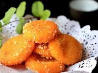

Pumpkin Cakes

Price: $9.99
九点九十九元
Chinese pumpkin cake (Nan Gua Bing) is a delicious fried Chinese dessert that is crispy on the outside, but gooey on the inside. It is also often filled with a sweet red bean paste filling which matches well with the natural sweetness of the pumpkin.